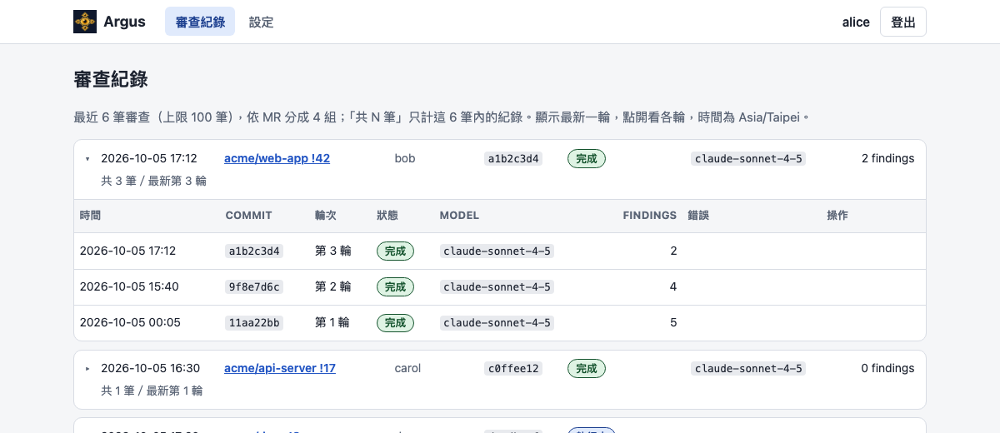
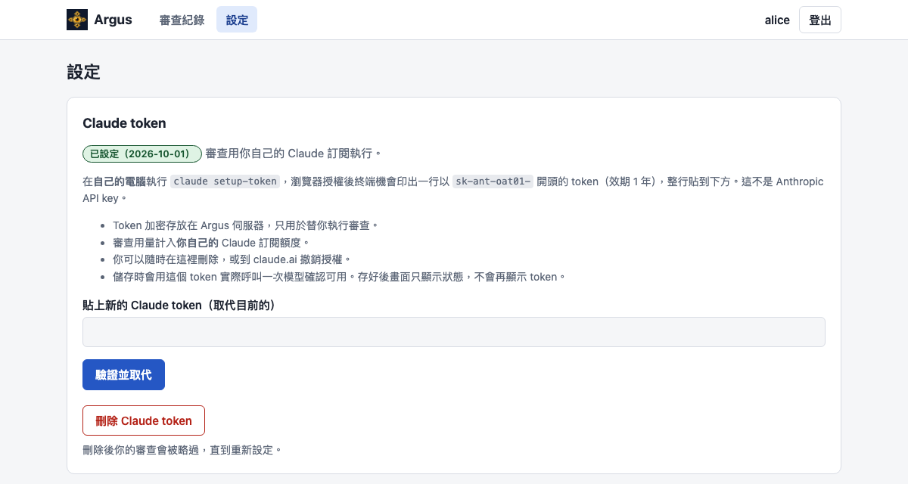

Your review skill, on every merge request.
Argus is a self-hosted AI reviewer for GitLab. When you are assigned as a reviewer, it reviews the merge request with your own skill and leaves inline comments and a summary under your GitLab identity.
How it works
No webhooks to set up. Argus watches for merge requests where you are a reviewer.
Get assigned as reviewer
Argus polls GitLab every 30 seconds for open merge requests that list you as a reviewer. Want it instant? Call the trigger API right after the MR is created.
It reviews automatically
Claude Code runs read-only on a shallow clone of the repository, guided by your own review skill and the diff.
Comments, then follow-up
Findings land as inline discussions plus one summary, under your name. After each push, only the new changes are reviewed and fixed threads are resolved.
What you get
One Argus can serve a whole team. Everyone brings their own login, skill and subscription.
Your skill, your voice
Each user uploads their own
SKILL.mdand sets their own thresholds, comment language and model.Your own Claude subscription
Every user signs in with GitLab OAuth and pastes a token from
claude setup-token. Usage counts against their own plan, never someone else's.Incremental re-review
Only the diff since the last reviewed commit is checked. Earlier findings are tracked as fixed or still open, and fixed inline threads are resolved for you.
You make the call
Reply
/argus accepton a finding you consider fine. Argus resolves it and recomputes the verdict without re-running the AI.Trigger API
Let your coding agent request a review the moment it opens a merge request. Each user has their own API key.
Optional extras
Opt-in auto-approve under your own name when a round is clean. Optional Jira requirement context (Server / Data Center).
Review history
See every round per merge request, with status, findings and the model that actually ran. Failed runs retry automatically.
Simple to run
One Node process, SQLite storage and a plain server-rendered web UI. Deploy with Docker Compose.
Multi-user, owner approved
New sign-ups wait until the owner approves them, so nobody gets reviews they did not ask for.
See it in action
Illustrative examples with made-up names and data. The Argus web interface is in Traditional Chinese.
Verdict: changes requested. 1 open, 1 fixed since the last round, 1 accepted by the reviewer.
Findings
- openminor
src/auth/session.ts:58
The session cookie has no expiry, so it outlives the login. - fixed
src/api/orders.ts:112
Missing null check onorder.items. Thread resolved. - accepted
src/jobs/sync.ts:30
Retry loop has no cap. Accepted: tracked in PROJ-123.
/argus accept tracked in PROJ-123

Security by design
An AI that reads untrusted code should not hold your keys. Argus keeps the two apart.
- Tokens never reach the AIThe agent only gets
Read,GrepandGlobon a shallow clone. Your GitLab and Claude tokens stay outside its context. - Deterministic code does every writeComments, resolves and approvals are posted by plain code from the agent's structured findings, not by the model calling tools.
- Dry-run by defaultReviews run and are recorded, but nothing is posted until the owner switches to live mode.
- Encrypted at restStored tokens are encrypted with AES-256-GCM. The web UI uses CSRF tokens, a strict content security policy and hashed session ids.
- Careful auto-approveOff unless you opt in. It is bound to the exact reviewed commit and only ever revokes approvals Argus made itself.
Quick start
Docker with Compose v2 is all you need on the host.
git clone https://github.com/duedue/argus-gitlab-review.git && cd argus-gitlab-review
cp .env.example .env && chmod 600 .env
openssl rand -base64 32 # put the output in ARGUS_MASTER_KEY
$EDITOR .env # set BASE_URL, GITLAB_URL, ARGUS_MASTER_KEY
docker compose up -d --buildThen open BASE_URL. The first run lands on /setup, which asks for the one-time setup code from the container log, your GitLab OAuth application credentials and the owner's GitLab user id. After that, sign in with GitLab, upload a skill and paste your Claude token. Switch from dry-run to live on the admin page when the results look right.
Full walkthrough: docs/SETUP.md and the README.
Requirements & limitations
- Claude subscription. Each user needs their own. Without a token, that user's reviews are skipped, and Argus never falls back to the owner's subscription.
- GitLab OAuth application. Confidential, with scopes
apiandread_repository. Tested with GitLab 15.11. - Jira is optional, and Server / Data Center only. Jira Cloud is not supported.
- The web interface is in Traditional Chinese. This site, the README and the guides in
docs/are in English. Review comment language is a per-user setting. - Polling, not webhooks. Reviews start within about 30 seconds, or instantly through the trigger API.
- Large diffs are not reviewed. Argus asks the author to split the merge request instead. Draft merge requests are skipped.